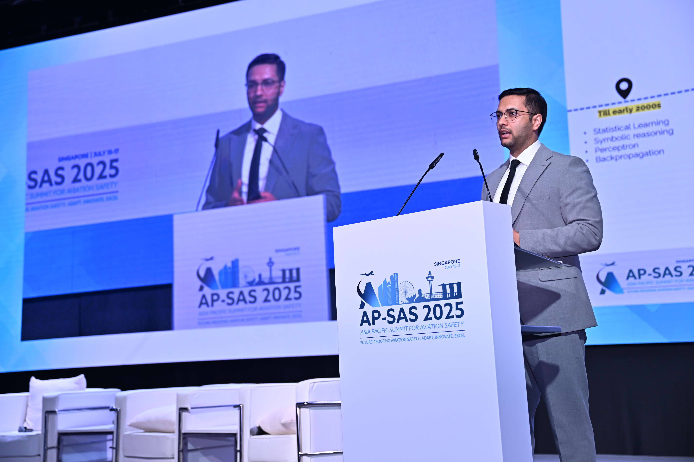
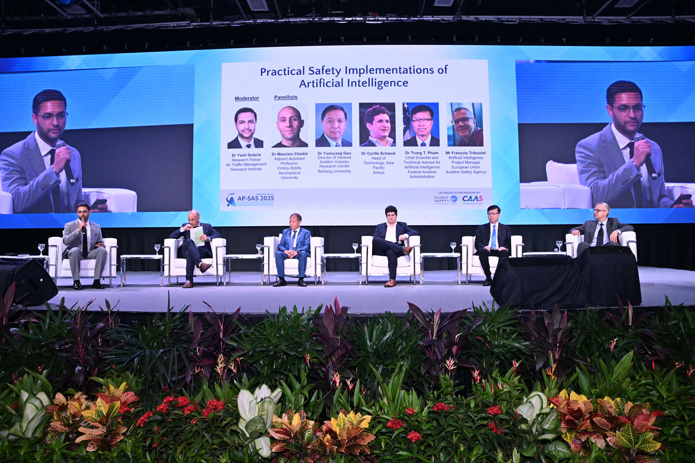

Gallery
Events, talks, workshops, and more.

APSAS (Asia Pacific Summit for Aviation Safety) 2025
I spoke about the evolving AI landscape, the current wave of Large Language Models and specialised AI implementations, and how these technologies are shaping aviation. From enhancing customer service to enabling safety-critical operations, the opportunities are vast, but so are the challenges of robustness, explainability, and certification..

APSAS (Asia Pacific Summit for Aviation Safety) 2025
I moderated the panel "Practical Safety Implementations of AI" with leaders from Airbus, EASA, FAA, Beihang University, and Embry-Riddle Aeronautical University.
Panel members:
- Dr. Maurizio Chedid (Adjunct Assistant Professor, Embry-Riddle Aeronautical University)
- Dr. Gao Yuanyang (Associate Professor, Beihang University)
- Dr. Cyrille Schwob (Head of Technology, Asia Pacific, Airbus)
- Dr. Trung T. Pham (Chief Scientist and Technical Advisor for Artificial Intelligence, Federal Aviation Administration)
- Mr. François Triboulet (Artificial Intelligence Project Manager, European Union Aviation Safety Agency)

ATRDS
Update this caption with a short description of the event, talk, or occasion.


Generative AI & LLMs Workshop — EASA, Cologne
I had the privilege to deliver a training workshop on Generative AI and Large Language Models (LLMs) at the European Union Aviation Safety Agency (EASA) in Cologne. The workshop focused on the architecture, capabilities, and limitations of state-of-the-art generative AI models, with particular attention to topics such as hallucinations, mitigation strategies, and domain-specific applications in aviation. The sessions combined foundational concepts with interactive, hands-on discussions, enabling a practical and critical understanding of how these technologies can be responsibly used in safety-critical contexts.
In parallel, in-depth discussions on reinforcement learning (RL) use cases in aviation were facilitated in support of EASA's AI Concept Paper – Issue 03, enabling a constructive exchange on how advanced AI techniques can be aligned with regulatory, operational, and safety considerations.
Overall, the engagement provided a valuable forum to connect current AI research with the practical realities of aviation regulation and assurance.